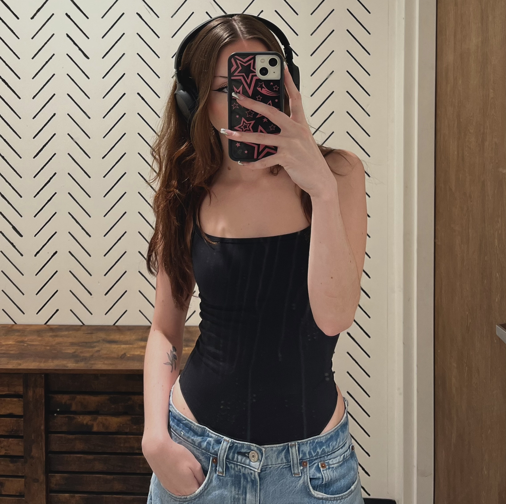
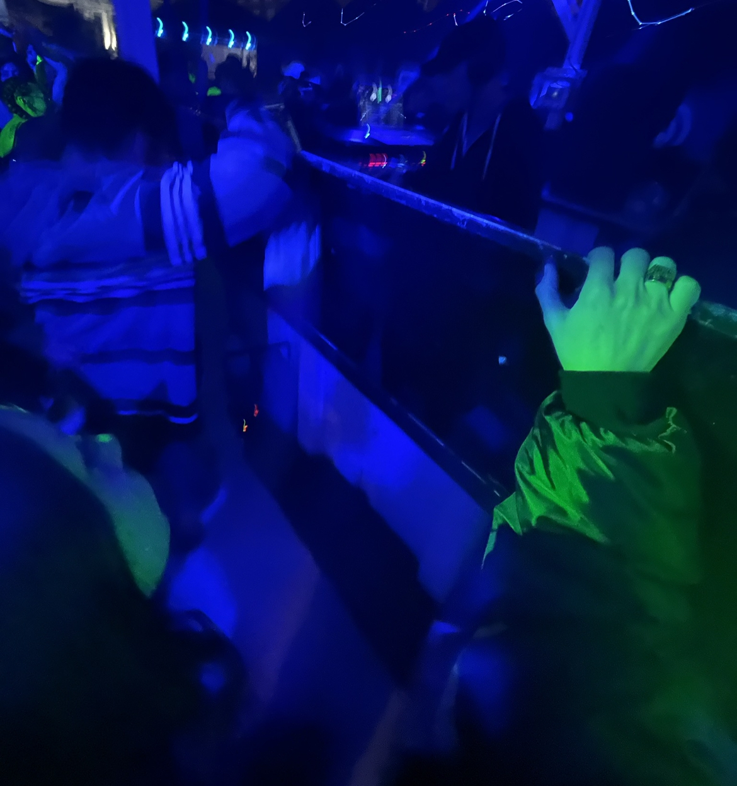
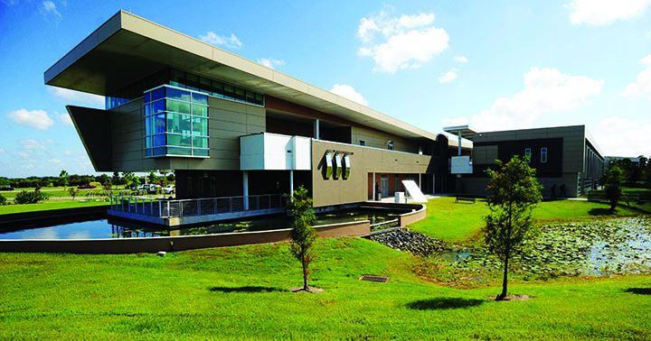
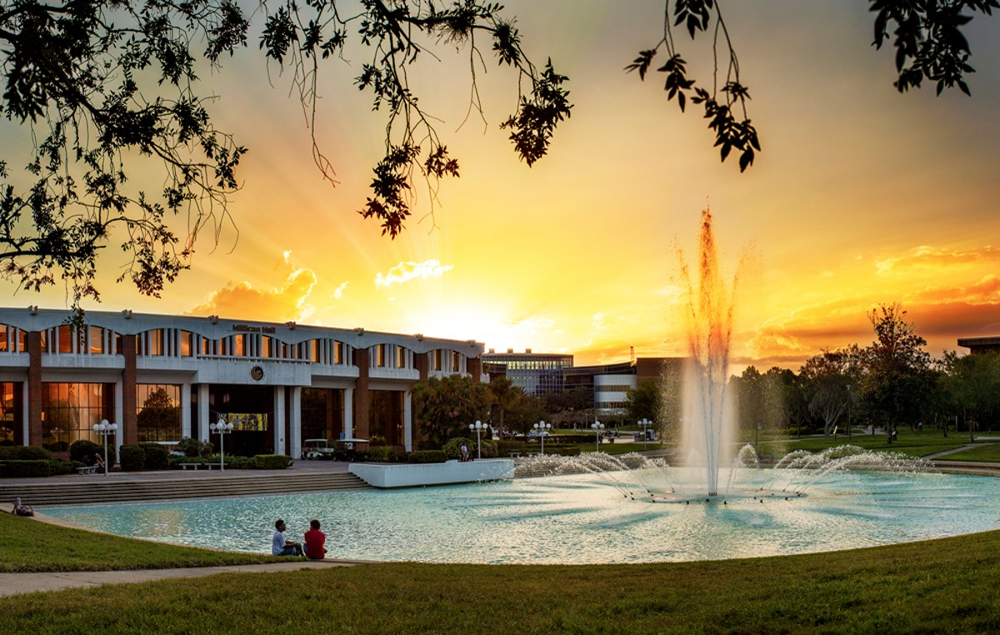

<!--For MA3 Project-Front End Web Design-->
<!-- Meta Information (Not Displayed in Browser)-->

<!DOCTYPE html>
<html lang="en">
  <meta charset="UTF-8" />
  <meta name="viewport" content="width=device-width, initial-scale=1.0" />

<!--Style Sheet (CSS)-->
<link rel="stylesheet" href="main.css"/>
</html>

<!--Fonts-->
<link rel="preconnect" href="https://fonts.googleapis.com" />
<link rel="preconnect" href="https://fonts.gstatic.com" crossorigin />
<link
  href="https://fonts.googleapis.com/css2?family=Josefin+Sans&family=Jost:wght@200&family=Oswald:wght@300&display=swap"
  rel="stylesheet"
/>

<!--Navigation bar-->
<div id="wrap"></div>
<ul id="nav">
  <li><a href="#">home page</a></li>
</ul>
<div id="content"></div>

<head>
<!--Displayed in Browser Head-->
<title>my personal journey through ucf</title>
</head>

<div class="title">
<body>
<!--Page Title-->
<h1>my personal journey through ucf</h1>
</div>


<!--Sub Page Title-->
<h3>by: regan sowell</h3>

<br />
<br />

<!--Grid(s)-->
<div class="grid-container">


<!--Grid 1-->
  <div class="grid-item">

<!--Section 1 Header-->
<h4>who is regan sowell?</h4>

<p>
<!--Image 1-->
  
</p>

<p>
<!--Text for Paragraph 1 Section 1-->
    My name is Regan Sowell, and I am currently 22 years old. My hometown, born
    and raised, is Brandon, Florida. I lived there my whole life, up until I
    decided to move to Orlando to attend The University of Central Florida,
    although I still consider the Tampa area my "home", becuase that is where my
    Mom still lives.
</p>

<p>
    I enjoy a lot of different things that would be included in the genre of
    "Art". Things such as Fashion, Music, Design, etc. I really enjoy being
    creative and using my creativity as a way to express myself, being that I do
    struggle with anxiety, I use this to relieve my anxiety and kind of go to
    "another world". Although sometimes, I do find it hard to find time
    sometimes. But whenever I do have some free time on my hands, you will
    always find me doing something that invloves the genre of being creative, in
    whatever way it might be.
</p>

<!--Image 2-->

</p>
</div>

<!--Grid 2-->
<div class="grid-item">

<!--Section 2 Header-->
<h4>where it all started.</h4>

<!--Text for Paragraph 1 Section 2-->
<p>
    Once I graduated with my AA at Hillsborough Community College, I kind of was
    stuck on what I wanted to further my education in. My number one plan was to
    get my Bachelor's Degree in Graphic Design. That plan was soon shot down,
    after I learned that you had to have a portoflio to be accepted into the
    program. I do not do much of "making" art, so learning this information made
    me rethink what I wanted to further my educaiton in.
</p>

<p>
 <!--Image 3-->
  
</p>

<p>
    I also knew I had a love for computers and technology in general... so I
    started to do my research on the different Bachelor's Degree colleges around
    me offered. Thats when I found and then learned more about the Digital
    Media: Web Design Track degree. This sparked something in my mind, and I
    became extremely intrigued when I started to read and learn more about what
    really this degree entailed. I did not have much interest(s) in any other
    degree or field, so I just stuck to the Digital Media: Web Design Track idea
    and ran with it essentially.
</p>
</div>

<!--Grid 3-->
<div class="grid-item">

<!--Section 3 Header-->
<h4>why ucf?</h4>

<p>
    <!--Text for Paragraph 1 Section 3-->
    When I first graduated Highschool in the year 2019, a huge University was
    not really what I wanted to go to. I still wanted to attend College and get
    a degree, because that has always been extremely important to me, but the
    thought of a University kind of scared me in a way. I had talked to my Mom
    about the different options and routes I could take, and she suggested going
    to my local Community College to get my AA and then when I am ready, I can
    attend a University.
</p>

<p>
    Later on, when I did graduate from Hillsborough Community College, I was
    finally mentally ready to attend something at a larger scale.
<br />
<br />
    The University of Central Florida (UCF) was always my first option for some
    reason... I did not really have a reason other than it was the closest
    University, that also was not too far away from home. I actually never
    toured the campus, or even researched it, other than researching the
    different degrees and majors they had to offer. I sort of, in a way, just
    winged it, and went with my gut, which I am very glad I did!
</p>

<p>
  <!--Image 4-->
    
</p>
</div>

<!--Grid 4-->
<div class="grid-item">

<!--Section 4 Header-->
<h4>why web design?</h4>
  
<p>
<!--Text for Paragraph 1 Section 4-->
    Web Design was, like I said, kind of a "second option" for me, but I am very happy with the decision I have made for my Major, and I would not want it any other way. 
</p>
  
<p>
    At the beginning of my college journey, I was not very aware of all the different things the Web Design Major could offer for my future. While going through the few different courses that I have taken thus far, I have began to realize what interests me in this field and what I would genuinely enjoy doing for the rest of my life. Of course, there are so many more classes I have yet to take, that might catch my eye... but as of right now Front End Design is something I have had a lot of fun learning about, and cannot wait to learn more about as well. 
</p>
  
<p>
    Being creative is important to me, and I feel as if Front End Design will make it possible for me to be able to be as creative as possible, whilst still being able to use my coding knowledge as well.
</p>
</div>
</div>

</body>
</html>
